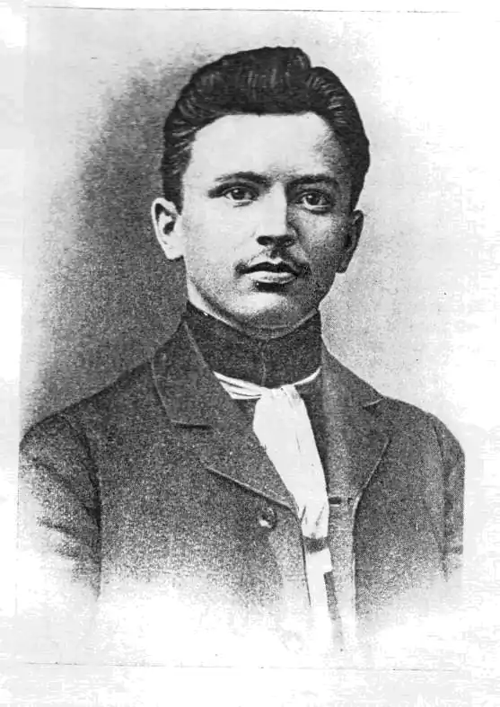

Данило Юрійович Харов'юк – український письменник-новеліст, громадський діяч, який писав твори про життя гуцульської бідноти початку ХХ століття. Іван Франко у статті "Літературна мова й діалекти" (1907) звернув увагу на "оригінальний талант" молодого письменника: "Не в тім річ, що гуцульським діалектом він володіє краще та вірніше, ніж хто-небудь перед ним; у самім життю гуцулів він оком правдивого артиста вміє доглянути такі моменти і риси, яких недобачав ніхто перед ним".
Життєвий шлях його був недовгий. Народився він 25 грудня 1883 року в селі Підзахаричі Вижницького повіту, в Карпатах.
З дитячих років Данилко любувався чистими і бурхливими водами Черемоша, синіми горами і крутим перевалом Німчич. Любив спостерігати, як у ярмаркові дні сотні горян, навантажені бесагами, не кваплячись, манджали до Вижниці, а потім поверталися назад у гори. Нелегко було Данилові розлучатися з цим чарівним куточком рідного села. Та прагнення пізнати світ було сильнішим. Після закінчення початкової школи в рідному селі, він навчався в Чернівецькій учительській семінарії. На той час українське шкільництво ставилося на перше місце. Саме за допомогою освіти, вважалося тоді, можна поліпшити долю простого народу. Як згадували люди тих часів, такі думки ширилися від Юрія Федьковича, котрий теж ішов не раз через Німчич з рідного Сторонця-Путилова у світ широкий і повертався цим шляхом назад до рідного дому. Кожне сказане Ю. Федьковичем тут слово довго кружляло селами і залишалося в народній пам'яті цілим поколінням. Ось і такі чутки, як свідчить небіж Данилів Юрій Харов'юк, спонукали майбутнього письменника піти на вчительські хліби. Закінчив Чернівецьку учительську семінарію, в якій українську мову і літературу викладав відомий український письменник Осип Маковей. Він помітив у Данила Харов'юка потяг до літературної творчості й радив йому писати новели та оповідання з гуцульського життя. Після закінчення семінарії Д. Харов'юк з 1905 по 1914 роки працював учителем у карпатських селах Розтоки, Іспас-Велике Поле та ін. У 1907 році в "Літературно-науковому вістнику" було опубліковано його оповідання "Палагна". З цього часу новели, нариси, оповідання Д. Харов'юка друкувалися в різних періодичних виданнях. На початку Першої світової, в 1914 р., його мобілізували в австрійську армію. В кінці 1916 р. він тяжко захворів і 14 жовтня цього ж року помер у чеському містечку Теші, де й похований. Данило Харов'юк мав двох синів: Мирослава і Ярослава. Його дружина Ярина, після захоплення Буковини румунським військом, деякий час вчителювала в селах Підзахаричі та в Мілієве. Коли були закриті школи з українською мовою навчання, вчителям-українцям було заборонено працювати на рідних землях. Такі дискримінаційні порядки румунські загарбники поширили на всю українську інтелігенцію. Не могли знайти роботи на Буковині сини Д. Харов'юка, тому працювали в Румунії. Під кінець 30-х років до них виїхала з Буковини і їх мама, де й померла. Після Другої світової війни радянська влада переслідувала родину Д. Харов'юка в Румунії. Один з його синів карався в концтаборах Магаданської області. У 1958 році, у час політичної відлиги у Радянському Союзі, у Державному видавництві художньої літератури України вийшла книжка "Буковинські письменники", яку впорядкували О. Романець і Ф. Погребенник, а вступну статтю написала А. Коржупова. Тоді-то читачі рідного краю дізналися вперше більше про письменника з буковинської Гуцульщини Д. Харов'юка. Через застійні часи в СРСР не згадано письменника і в 100-річчя його від дня його народження. Аж у роки, так званої "перебудови", у Радянському Союзі 24 грудня 1988 р. з нагоди 105-ї річниці від дня народження Д. Харов'юка Путильська газета "Радянські Карпати" і Вижницька "Радянська Верховина" вшанували письменника публікаціями "Д. Харов'юк" і "Талант незаслужено забутий". За своє коротке життя письменник написав небагато творів, але вони заслуговують на увагу як з ідейного, так і з художнього боку. Він виступив із своїми творами в той час, коли внаслідок різних причин, перестали писати Василь Стефаник, Марко Черемшина. Вже його перші оповідання свідчили, що новеліст прагнув відгукнутися на суспільні події, які відбувалися в гуцульському селі, відтворити сучасну йому дійсність. В усіх творах Д. Харов'юка відображені події розгортаються на Гуцульщині. Змальовані письменником образки з життя і побуту гуцулів є типовим для того часу. Прототипами персонажів його творів були люди, серед яких він виріс і працював. Д. Харов'юк знав їх болі і страждання, умів підібрати ключ до їхнього зраненого серця. Тому не дивно, що у його творах злиденне життя гуцульської сіроми показано виразно, переконливо. Уже в першому оповіданні "Палагна" Д. Харов'юк виступає як знавець побуту гуцулів, їх психології. В ньому змальовано колоритні образи двох селянок з характерним для них світом думок і почуттів. Після цього побутового малюнку письменник виступив з оповіданням "Посліднє верем'є", яке було новим кроком у його творчому розвитку, свідчило про інтерес до важливих соціальних питань. Зображуючи процес розорення селянських господарств банками, різними лихварями, автор показує жертви капіталістичної експлуатації та визиску. Твір починається з повідомлення про трагічну подію – повісився селянин Микитка. Селяни з тривогою говорять про причини його самогубства, — про шахрайство банків, урядовців, віроломство лихварів. У кожного з них своє горе, свій біль. У тугі сіті визискувача попав і Остафій. Розкриття його переживань, викликаних безвихідним становищем, посилює драматизм твору. В образі Остафія автор втілює характерні риси гуцулів-бідняків — їх працьовитість, чесність, любов до рідної землі. Як і інші селяни, він ненавидить поневолювачів, на боці яких стоять суд, державні закони: "…а боротися проти суду — шкода і труду", — говорить Остафій. Адже економічне розорення гуцульського села, його моральний занепад відбувається "при помочі цісарського уряду". Ці висловлювання селян свідчать, що вони розуміють експлуататорську суть капіталістичного ладу, хоч не знають як проти нього боротися. Письменник вболіває за долю людей рідного краю, над яким лине тужливий звук трембіти, що сповіщає про "посліднє верем'є" – наростаючи злидні вимирання. Твір Д. Харов'юка є правдивим відображенням того стану, що існував на Гуцульщині в роки австро-угорського поневолення. Тему зубожіння гуцульського селянства письменник розробляв також у творах "Ліцитація" (1911), "Хлиставиця" (1914), "Жаль" (1914) та інші. У нарисі "Хлиставиця" показано, як жандарми, судові урядовці знущаються над селянином за те, що він посмілився ловити в Черемоші "панську" рибу, з якої його дружина хотіла зварити для дітей пісну страву — "хлиставицю". Розповідь селянина про своє нещастя сповнена тугою і жалем, що випливають з усвідомлення важкого соціального і політичного становища, з усвідомлення неможливості позбутися матеріальних нестатків. Одним із кращих творів Д. Харов'юка є оповідання "Смерть Сороканюкового Юри" (1913). В ньому відображено трагічну подію – загибель керманича Юри в час поводі на Черемоші. В оповіданні письменник виявив вміння яскраво змалювати душевний світ людини, створити образи простих гуцулів, показати типові сцени життя і побуту жителів гуцульського краю. Центральним у творі є образ Юри. Вся увага автора зосереджена на розкритті його переживань. Керманич Юра у велику повідь мусить стерегти дерево промисловця Крумгольця, щоб його не взяла вода. А Черемош шалено несе свої води. Його "хвилі" — високі, як гори, як верхи, як груні – хребти". Добре прикріпити дарабу не можна. Всюди каміння, Юра "вже не годен нічого вдіяти там, хоч гинь серед дня під скалою у воді". Але Крумгольц погрожує, що коли повідь візьме хоч одну колоду, то він Юру "віддасть до суду", забере його майно. А ріка "все більше розливається, шириться далі". Наростання грози в природі збільшує тривогу Юри. Він весь у напруженні, в чеканні чогось страшного. І воно сталося! Намагаючись не допустити, щоб повідь взяла дарабу, Юра гине в "бистрих хвилях води Чорного Черемоша", який "своїм горлом хотів пожерти світ". Сумна звістка рознеслася в Карпатах. Смерть "забрала жінці чоловіка-газду, а керманичам побратима". Як поранена чайка б'ється дружина Юри Василина. Своє важке горе вона виливає в тужливих голосіннях, які звучать ніби реквієм по померлому. Не впадаючи у мелодраматизм, письменник відтворює глибину її переживань, безмежний біль, що полонив серце. "Василина голосить, розриває хустку на голові на дрібні шматки, іде простоволоса за мерцем – газдою. Під кожним її кроком розступається земля… в очах сумерк". Одним із засобів, за допомогою якого Д. Харов'юк досягає великого напруження в змалюванні природи, у відображені переживань Юри і Василини, є розгорнуті означення, влучні метафори, порівняння. Картина поводі Черемошу описана дуже рельєфно саме завдяки широкому використанні цих тропів. Ось приклад, що характерний для стилю автора: "Буйно-гнівним, весело розкішним тріском-шалом в'ється ота страх бистра хвиля Дунаю води Чорного Черемоша". Своїм твором Д. Харов'юк засуджував віроломність, "гидку зухвалість промисловців дерева", які визискували трудове населення, були причиною загибелі багатьох людей. Оповідачем правди про життя й побут гуцулів виступає Д. Харов'юк і в таких творах, як "Спомин", "Тезки", "Жаль", "Ліцитація", "Уроки" та інші. Він змальовує образи бідняків-заробітчан, які ідуть в далеку Боснію на лісові розробки ("Спомин"), розповідає про визиск лихварями трудового населення ("Тезки", "Жаль"). Його хвилювала правда життя, і він змалював її такою, якою бачив.